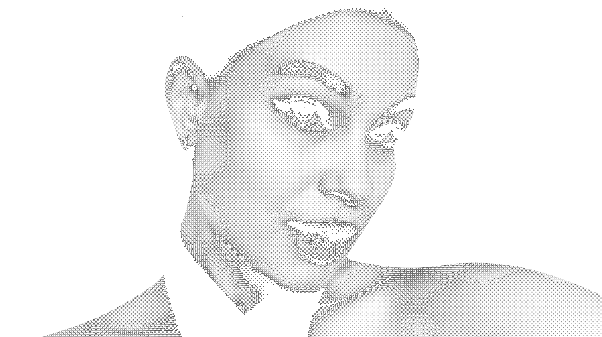

ПОРТФОЛИО

Привет, я Даша!
Создаю визуальные концепции для брендов: от рекламы и полиграфии до мерча и интерфейсов. Люблю типографику и выразительные композиции.
Посмотреть работы ↗Laser&Beauty ↗
Графический дизайн для сети студий лазерной эпиляции в России и Казахстане: соцсети, рассылки, рекламные кампании и мерч.
Золотое Правило ↗
Графика для сети частных клиник: наружная реклама, баннеры, полиграфия, соцсети и презентации.
ZIN BABUSHKA ↗
Авторский зин о бабушкином платке как современном модном аксессуаре, выполненный в коллажной технике.
Dance Soul ↗
Логотипы, полиграфия и принты для одежды танцевальной студии Dance Soul.
TUSY EVENT ↗
Логотип и оформление социальных сетей проекта, посвящённого мероприятиям.
Севстар. Кулинария ↗
Интерфейс кулинарного приложения для смарт-приставки, разработанный на хакатоне в 2023 году.
Сова и Лисёнок ↗
Лендинг детского проекта с пастельной палитрой, информацией о занятиях и формой заявки.
Весёлый Пекарь ↗
Игровой интерфейс «Весёлый пекарь»: стартовый экран, выбор уровней, победа, поражение и настройки.
3D, ретушь и иллюстрации ↗
Подборка работ: визуализация планировок квартир, low-poly модели, портретная ретушь и цифровая иллюстрация.
ОТДЕЛЬНАЯ ИСТОРИЯДАКОЛЛЕКЦИЯ / 2026
СПАСИБО ЗА ПРОСМОТР
Идеи, которые
обретают форму.
Я графический дизайнер. Разрабатываю визуальные концепции, рекламу, полиграфию, мерч и digital-материалы для коммерческих проектов.
Обсудить проект ↗